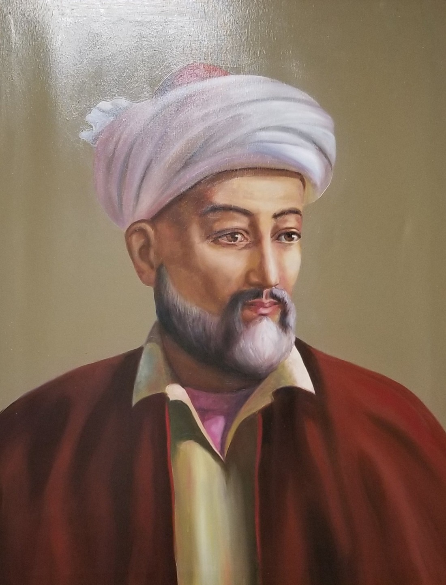
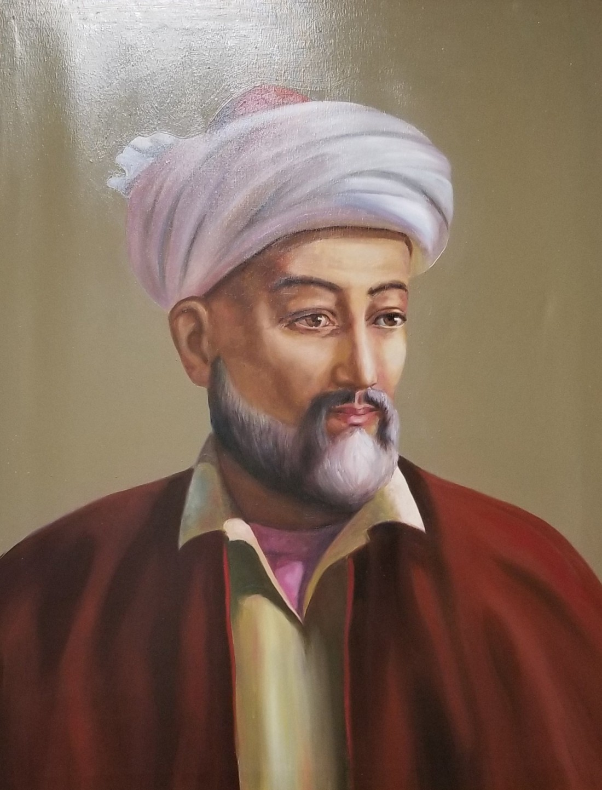

Alisher Navoiy (9-fevral 1441-yildan 3-yanvar 1501-yilgacha umr koʻrgan) — oʻzbek va boshqa turkiy xalqlarning shoiri, mutafakkiri va davlat arbobi.
Gʻarbda Chigʻatoy adabiyotining buyuk vakili deb qaraladi.
Tarixchi Ali Yazdiy nazariga tushgan, shoir
Lutfiy yosh shoir isteʼdodiga yuqori baho bergan, Kamol Turbatiy eʼtirofini qozongan. Sayyid Hasan Ardasher, Pahlavon Muhammad kabi ustozlardan taʼlim olgan, Abdurahmon Jomiy bilan ijodiy hamkorlikda boʻlgan.
Navoiy 1469-yilgacha temuriylar orasidagi ichki nizolar sababli Hirotdan yiroqroqda yashagan.
Husayn Boyqaro Xuroson taxtiga oʻtirgach (1469), br
Navoiy hayoti va ijodida yangi
bosqich boshlanadi, muhrdorlik (1469-yilda) mansabiga, vazirlik (1472-yilda) va Astrobod hokimligi
(1487-yilda)ga tayinlanadi. 1480–1500-yillar mobaynida oʻz mablagʻlari hisobidan bir necha madrasa,
40 rabot (safardagi yoʻlovchilar toʻxtab oʻtish joyi), 17 masjid, 10 xonaqoh, 9 hammom,
9 koʻprik, 20 ta hovuz qurdiradi. Husayn Boyqaro Alisher Navoiyga „muqarrabi hazrati sultoniy“
(„sulton hazratlarining eng yaqin kishisi“) degan unvonni beradi. Unga koʻra br
Navoiy davlatning barcha ishlariga aralasha olardi.